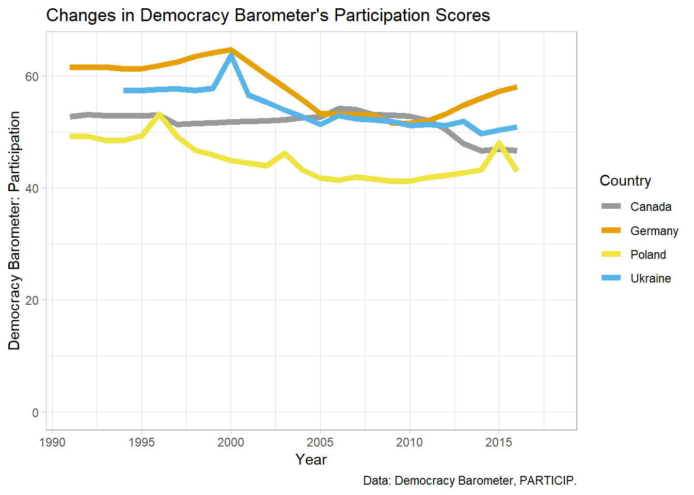
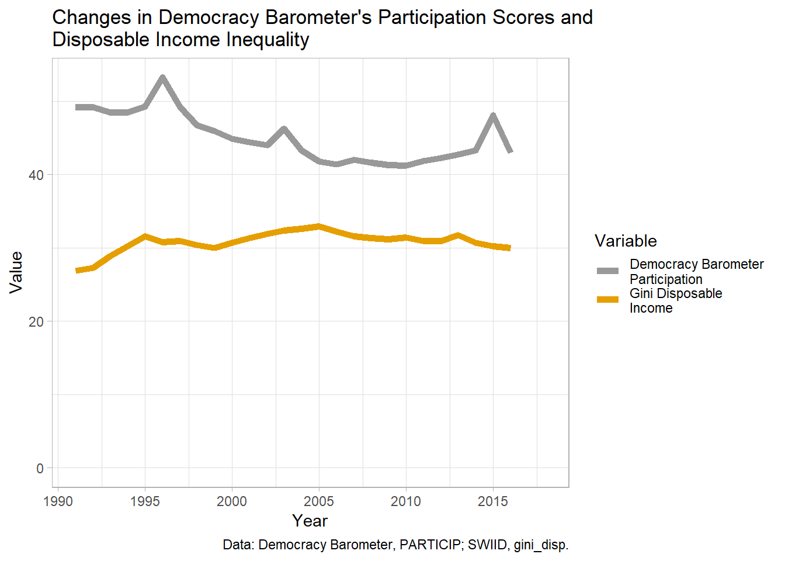

with Viktoriia Muliavka
Social and political scientists often need to put together datasets of country-level political, economic, and demographic variables with data from different sources. These data are available on websites of the institutions or projects that created them, in various formats, which makes downloading them and combining a bit of a steeplechase.
In this post we show how we created a dataset of country-level indicators of political participation and economic inequality in the POlitical Inequality project (POLINQ[^1]).
With this guide we hope to reduce the barrier to collecting and combining country-level indicators in an automated and reproducible way as opposed to doing this manually.
We use the following datasets:
It is worth noting that there exists a package for downloading democracy indicators (democracyData), but it does not include the sub-indicators or sub-scales that are used to create the final composite scores, only the composite scores themselves.
Downloading the data is one part. To merge them, it is also necessary to standardize country codes and year formats. The countrycode package is invaluable to convert between country code types. Years typically only need conversions between string and numeric types.
#devtools::install_github("xmarquez/vdem")
library(vdem) # get V-Dem data
library(WDI) # get data from World Bank's WDI
library(countrycode) # convert country codes
library(tidyverse) # manipulate data
library(xlsx) # read xlsx files
library(readxl) # read xls files
library(haven) # read SPSS files
library(data.table) # fwrite to quickly write to .csv
library(ggplot2) # ggraphs
# custom color palette
myPalette <- c("#999999", "#E69F00", "#56B4E9", "#009E73", "#F0E442", "#0072B2", "#D55E00", "#CC79A7")V-dem can be downloaded via a dedicated R package (V-Dem, vdem), and a particular indicator can be selected with the parameter name_pattern.
The variable vdem_country_text_id already contains ISO3 character country codes (ISO3c), which is our preferred country code format here.
vdem.part <- extract_vdem(name_pattern = "v2x_partipdem", include_uncertainty = FALSE) %>%
select(iso3 = vdem_country_text_id, year, vdem_par = v2x_partipdem)Polyarchy data are available as semicolon-delimited .csv files, as well as in Stata, SPSS, and Excel formats. The .csv format is the simplest, so this is the one we prefer. The read.csv2 function reads semicolon-delimited files as a default. Alternatively, read.csv could be used with an appropriate setting of the separator character.
Country codes are available in the Correlates of War format, which needs converting to ISO3c with the countrycode function. The year and the participation variable we are primarily interested in also need converting to numeric.
polyarchy <- read.csv2("https://www.prio.org/Global/upload/CSCW/Data/Governance/file42534_polyarchy_v2.csv",
stringsAsFactors = FALSE) %>%
mutate(iso3 = countrycode(Abbr, "cowc", "iso3c")) %>%
select(iso3, year = Year, polyarch_part = Part) %>%
mutate(year = as.numeric(year),
polyarch_part = as.numeric(polyarch_part))Freedom House ratings started in 1973, but the subcategory scores are only available since 2006. They can be downloaded in an .xlsx document with separate sheets including data for single years. The first sheet contains information about the contents of the remaining sheets, and the consecutive sheets contain information by year starting from the most recent year (2018), while the last sheet contains category scores (which are no use to use, since we need sub-category scores).
We encoutered problems trying to read in the file directly from the URL into R with the read.xlsx function, so we found a workaround where we download the file to a temporary folder, and then open and manipulate it from there. It takes a moment to run, but it works.
From the downloaded file we only need selected columns from selected sheets. To identify those sheets and columns, we first read all sheet names from the .xlsx file and identify the sheets that contain the data we want to extract - those are sheets number 2 through 14.
Next we read all column names from one of the sheets with the data we are interested in (assuming that all remaining sheets have the same structure) - columns 1 (with country.territory names) and 6 (with the participation scores).
We loop through the sheets and store the extracted columns in a list. Then we append all elements of the list to create a country-year-level file.
Finally, we convert country.territory names to ISO3 codes, and fix the issue of Kosovo, which does not have an official ISO3 code, but the temporary one is “XKX”.
myurl <- "https://freedomhouse.org/sites/default/files/Aggregate%20Category%20and%20Subcategory%20Scores%20FIW2003-2018.xlsx" # set URL to the file to be downloaded
td = tempdir() # read in the path to the temp directory
tmp <- tempfile(tmpdir = td, fileext = ".xlsx") # create path to the temp file in the temp directory
download.file(url = myurl, destfile = tmp, mode="wb") # download file from URL to the temp file with set extention
excel_sheets(tmp) # read sheet names from the downloaded file
names(read.xlsx(file = tmp, sheetIndex = 2)) # read column names from the second sheet
fh.list <- list() # create empty list to store selected parts of the 13 sheets
for (i in 1:13) {
fh.list[[i]] <- read.xlsx(file = tmp,
sheetIndex = i+1, # index (number) of sheet int he .xlsx file
colIndex = c(1,6)) # indexes (numbers) of columns to be extracted
fh.list[[i]]$Country.Territory <- gsub("[*].*$","",fh.list[[i]]$Country.Territory) # eliminate asterisks from Country.Territory variable
fh.list[[i]]$year <- 2018 - i + 1 # add year column
}
fh <- do.call("rbind", fh.list) %>% # bind (append) rows of all elements of fh.list
mutate(iso3 = countrycode(Country.Territory, "country.name", "iso3c")) %>%
mutate(iso3 = ifelse(Country.Territory %in% c("Kosovo", "Kosovo*"), "XKX", iso3)) %>%
select(iso3, year, fh_B_aggr = B.Aggr)Polty IV distributes data in .xls and .sav (SPSS) formats. We had the same problems with directly reading the .xls file from the URL as with Freedom House, so we decided to use the .sav file instead. The only additional step we had to make beyond country code translations and setting the year variable ot numeric format was recoding of special codes in the polcomp variable (-66, -77, -88) to missing.
These special codes indicate foreign “interruptions” (-66), cases of “interregnum” or anarchy (-77), and “transition” (-88). For more information consult the Polity IV manual.
polity <- read_sav("http://www.systemicpeace.org/inscr/p4v2017.sav") %>%
mutate(iso3 = countrycode(country, "country.name", "iso3c")) %>%
mutate(iso3 = ifelse(country == "Kosovo", "XKX", iso3)) %>%
select(iso3, year, p4_polcomp = polcomp) %>%
mutate(p4_polcomp = ifelse(p4_polcomp %in% c(-66, -77, -88), NA, p4_polcomp))The Democracy Barometer published its data in .xls, .xlsx, and .dta (Stata) files. The .dta curiously has only missing values on the variable of interest to use, so we use the .xls file. Like with Freedom House data, we download the file to a temporary folder, and open from there. One modification that’s necessary is skipping the first four rows of the excel sheet, which contains a header that needs to be removed prior to reading the data.
myurl <- "http://www.democracybarometer.org/Data/DB_data_1990-2016_Standardized.xls"
td = tempdir()
tmp <- tempfile(tmpdir = td, fileext = ".xls")
download.file(url = myurl, destfile = tmp, mode="wb")
excel_sheets(tmp)
db <- readxl::read_excel(tmp, skip = 4) %>%
mutate(iso3 = countrycode(`Ccode QOG`, "iso3n", "iso3c")) %>%
select(iso3, year = Year, db_PARTICIP = PARTICIP) %>%
mutate(db_PARTICIP = as.numeric(db_PARTICIP))Data from the Standardized World Income Inequality Database (SWIID) can be downloaded as a .csv file from Github.
swiid <- read.csv("https://raw.githubusercontent.com/fsolt/swiid/master/data/swiid7_1_summary.csv",
stringsAsFactors = FALSE, encoding = "UTF-8") %>%
mutate(iso3 = countrycode(country, "country.name", "iso3c")) %>%
mutate(iso3 = ifelse(country == "Kosovo", "XKX", iso3)) %>%
select(iso3, year, gini_disp)Data from the World Bank’s World Development Indicators have a dedicated package WDI, which allows to search for data that contain a string (function WDIsearch) and to download data for a selected indicator, country coverage and time range (WDI).
poverty <- WDI(country="all", indicator=c("SI.POV.NAHC"),
start=1900, end=2018, extra=TRUE, cache=NULL) %>%
filter(!is.na(SI.POV.NAHC)) %>%
select(iso3 = iso3c, year, wb_poverty = SI.POV.NAHC)After all datasets are downloaded and have the same structure, country codes, and year variables, mergin them does not pose a problem. The last step is to create a variable with country names on the basis of the country codes.
merged <- full_join(db, fh) %>%
full_join(polity) %>%
full_join(polyarchy) %>%
full_join(swiid) %>%
full_join(vdem.part) %>%
full_join(poverty) %>%
mutate(country = countrycode(iso3, "iso3c", "country.name"))merged %>%
filter(country %in% c("Poland", "Ukraine", "Germany", "Canada"),
year > 1990) %>%
ggplot(., aes(x = year, y = db_PARTICIP, group = country, col = country)) +
geom_line(size = 2) +
ylab("Democracy Barometer: Participation") +
expand_limits(y = 0) +
scale_x_continuous(name = "Year",
breaks = seq(1990, 2015, 5)) +
ggtitle("Changes in Democracy Barometer's Participation Scores") +
labs(caption = "Data: Democracy Barometer, PARTICIP.") +
scale_color_manual(values = myPalette[c(1, 2, 5, 3)],
name="Country",
breaks=c("Canada", "Germany", "Poland", "Ukraine")) +
theme_light()
merged %>%
filter(country %in% c("Poland"),
year > 1990) %>%
select(iso3, year, db_PARTICIP, gini_disp) %>%
gather(variable, value, 3:4) %>%
ggplot(., aes(x = year, y = value, col = variable)) +
geom_line(size = 2) +
ylab("Value") + expand_limits(y = 0) +
scale_x_continuous(name = "Year",
breaks = seq(1990, 2015, 5)) +
ggtitle("Changes in Democracy Barometer's Participation Scores and \nDisposable Income Inequality") +
labs(caption = "Data: Democracy Barometer, PARTICIP; SWIID, gini_disp.") +
scale_color_manual(values = myPalette[1:2],
name="Variable",
breaks = c("db_PARTICIP", "gini_disp"),
labels=c("Democracy Barometer \nParticipation", "Gini Disposable \nIncome")) +
theme_light()
fwrite(merged, "merged-20190201a.csv")[^1:] The project “Political Voice and Economic Inequality across Nations and Time” is led by dr. Joshua Dubrow at the Institute of Philosophy and Sociology, Polish Academy of Sciences, and funded by Poland’s National Science Centre. More information about this project can be found here and here.